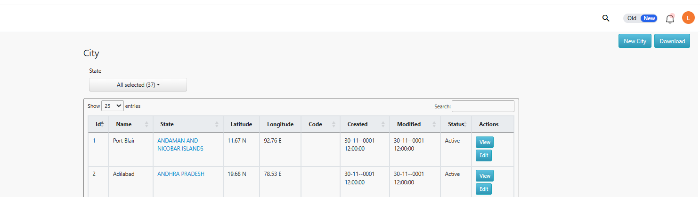
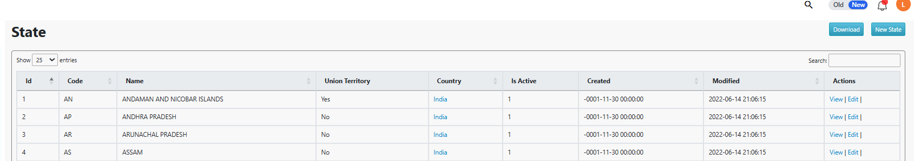
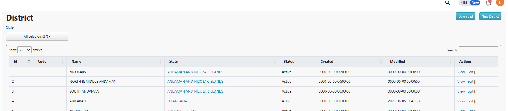

Where this fitsSet these up before warehouses and areas, both depend on zones, and areas depend on cities/districts being mapped correctly.
1. Zones & Subzones
Zones sit at the very top of the geography hierarchy, every warehouse and area is mapped to one. Subzones split a zone further when a single zone is too broad to manage as one unit.
The fastest way to set these up in bulk is via MDM:
Download the template
Pick Zones or Subzones above depending on what you're creating.
Fill in the required columns
Zone/subzone name, and for subzones, the parent zone it belongs to.
Upload via
/mdmsSearch for "Zones" or "Subzones" in the MDM listing, upload your filled file, and fix any validation errors shown.
2. Cities, States & Districts
These can be added one at a time from the web, or in bulk via MDM, useful when mapping a new region for the first time.
Via the web

/cities)
/states)
/districts)Via MDM
Go to
/mdmsSearch for "Cities", "States" or "District"
Fill in the template and upload
The fields are self-explanatory, adding a record creates a unique ID for it automatically.
NoteDistricts belong to states, and cities belong to districts, create them top-down (state → district → city) to avoid mapping errors.
Was this guide helpful?